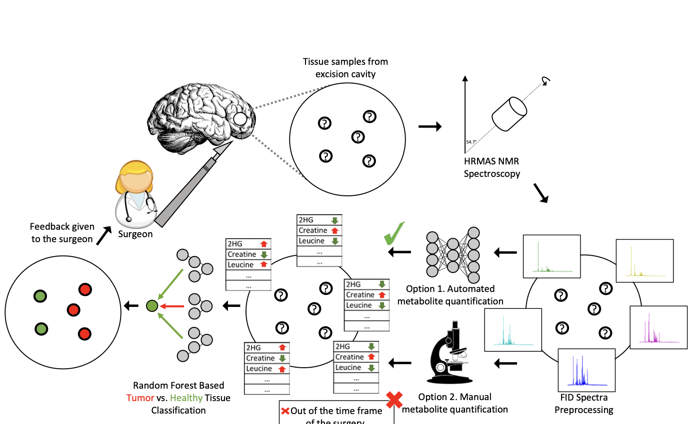

D Cakmakci*, Gün Kaynar*, C Bund, M Piotto, F Proust, IJ Namer, AE Cicek
Bioinformatics 38 (12), 2022
*Equal contribution
Identification and removal of micro-scale residual tumor tissue during brain tumor surgery are key for survival in glioma patients. High-Resolution Magic Angle Spinning Nuclear Magnetic Resonance (HRMAS NMR) spectroscopy-based assessment of tumor margins during surgery has been an effective method for this goal, but requires expert interpretation and time-consuming metabolite quantification that does not fit surgical timeframes. We manually quantified 37 metabolites and trained neural network models to predict metabolite concentrations directly from NMR spectra, then used these predictions for tumor classification, improving performance by up to 4.6% AUC-ROC and 2.8% AUC-PR compared to untargeted approaches (median AUC-ROC 88.7%), with ERETIC normalization further boosting results to a median AUC-ROC of 90.2%. We additionally identified a novel spectral region (7.97–8.09 ppm), linked to the N-acetylaspartate N-H group, as a promising and previously unreported biomarker candidate for glioma detection.
